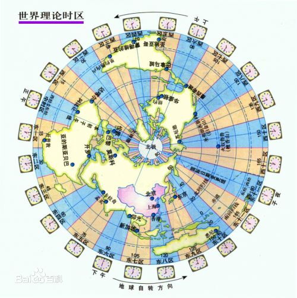

目录

国际经度会议（又称国际子午线会议）上，规定将全球划分为24个时区（东、西各12个时区）。规定英国的格林尼治天文台旧址为中时区（零时区）、东1-12区，西1-12区。每个时区横跨经度15度，时间正好是1小时。最后的东、西第12区各跨经度7.5度，以东、西经180度为界。每个时区的中央经线上的时间就是这个时区内统一采用的时间，称为区时，相邻两个时区的时间相差1小时。英国（格林尼治天文台旧址）为本初子午线，即零度经线。
时区的表格划分
为什么全世界不使用统一的时间
于各个地区所在地球位置不同，所处地球的经度不同，故其日出日落的时间也不相同。在地球上划定不同的时区，是为了使时间和自然现象（白天黑夜）有固定的对应。如果全世界用统一的时间，那么中国的8：00是早上，而美国的8：00却是晚上了。这样容易扰乱人自身生理的节律和对日常生活的安排也及其不方便。人是不能改变白天黑夜的，只好改变衡量白天黑夜的办法了。
GMT
GMT(格林威治标准时间)：也就是0时区的时间，理论上来说，格林尼治标准时间的正午是指当太阳横穿格林尼治子午线时（也就是在格林尼治上空最高点时）的时间。由于地球在它的椭圆轨道里的运动速度不均匀，这个时刻可能和实际的太阳时相差16分钟。地球每天的自转是有些不规则的，而且正在缓慢减速。所以，格林尼治时间已经不再被作为标准时间使用。现在的标准时间——协调世界时（UTC）——由原子钟提供。
UTC
UTC（世界协调时间），协调世界时是以原子时秒长为基础，国际原子时的准确度为每日数纳秒，而世界时的准确度为每日数毫秒，现在我们使用的互联网就采用该计时标准。UTC是GMT微调过的时间，我们可以认为两者是一致的。
CET
欧洲中部时间(CET)比世界标准时间(UTC)早一个小时，部分欧洲国家和北非国家使用，这个标准是地理加政治的产物；
CST
北京时间
CET=UTC(GMT) + 1小时
CST=UTC(GMT) + 8小时时间戳是指格林威治时间1970年01月01日00时00分00秒(北京时间1970年01月01日08时00分00秒)起至现在的总秒数(Java中获得的秒数是以毫秒为单位的)。
例如现在北京时间2015-12-31 17:00:00的时间戳是1451552400，就是指从北京时间1970-01-01 08:00:00到2015-12-31 17:00:00已经过去了1451552400秒。
使用时间戳有如下好处：
在Java8以前操作时间的常见API有：
Date主要负责存储一个绝对时间，并对两边提供操作接口。Calendar负责对Date中特定信息，比如这个时间是该年的第几个星期，此外，还可以通过set,add,roll接口来进行日期时间的增减。SimpleDateFormat主要作为一些格式化的输入输出。
Date类比较简单，支持两种构造函数。不建议用这个类进行复杂的操作。如果使用的是Java8，建议使用LocalDate。Date类也提供了和Java 8 API相互转换的接口。
Date date1 = new Date();
Thread.sleep(1000);
long nowTime = System.currentTimeMillis();
Date date2 = new Date(nowTime);
//Date类和Java 8 API相互转换的接口
Instant instant = date2.toInstant();
Date date3 = Date.from(instant);
System.out.println("nowTime:"+nowTime);
System.out.println(date1);
System.out.println(date2);
System.out.println(date3);
System.out.println(date2.getTime());SimpleDateFormat接收一个String pattern和Local参数来构造对象。其中pattern是预定义的：
G 年代标志符
y 年
M 月
d 日
h 时 在上午或下午 (1~12)
H 时 在一天中 (0~23)
m 分
s 秒
S 毫秒
E 星期
D 一年中的第几天
F 一月中第几个星期几
w 一年中第几个星期
W 一月中第几个星期
a 上午 / 下午 标记符
k 时 在一天中 (1~24)
K 时 在上午或下午 (0~11)
z 时区//默认的方言
SimpleDateFormat sf = new SimpleDateFormat("G yyyy-MM-dd a z");
SimpleDateFormat sf1 = new SimpleDateFormat("G yyyy-MM-dd a z", Locale.US);
SimpleDateFormat sf2 = new SimpleDateFormat("G yyyy-MM-dd a z", Locale.KOREA);
String format1 = sf.format(date1);
String format2 = sf1.format(date1);
String format3 = sf2.format(date1);
System.out.println("format1:"+format1);
System.out.println("format2:"+format2);
System.out.println("format3:"+format3);
//解析Date
Date date = sf.parse(format1);Calendar还有许多其他API，比如获得当前月天数，当前年天数等等，需要时可以查询使用。
Calendar calendar = Calendar.getInstance();
int year = calendar.get(Calendar.YEAR);
// 获取月，这里需要需要月份的范围为0~11，因此获取月份的时候需要+1才是当前月份值
int month = calendar.get(Calendar.MONTH) + 1;
// 获取日
int day = calendar.get(Calendar.DAY_OF_MONTH);
// 获取时
int hour = calendar.get(Calendar.HOUR);
// 获取分
int minute = calendar.get(Calendar.MINUTE);
// 获取秒
int second = calendar.get(Calendar.SECOND);
System.out.println("现在是" + year + "年" + month + "月" + day + "日" + hour
+ "时" + minute + "分" + second + "秒");
//获取一个月后的今天
calendar.add(Calendar.MONTH,1);//Current Date
LocalDate today = LocalDate.now();
System.out.println("Current Date="+today);
//Creating LocalDate by providing input arguments
LocalDate firstDay_2014 = LocalDate.of(2014, Month.JANUARY, 1);
System.out.println("Specific Date="+firstDay_2014);
//Try creating date by providing invalid inputs
//LocalDate feb29_2014 = LocalDate.of(2014, Month.FEBRUARY, 29);
//Exception in thread "main" java.time.DateTimeException:
//Invalid date 'February 29' as '2014' is not a leap year
//Current date in "Asia/Kolkata", you can get it from ZoneId javadoc
LocalDate todayKolkata = LocalDate.now(ZoneId.of("Asia/Kolkata"));
System.out.println("Current Date in IST="+todayKolkata);
//Getting date from the base date i.e 01/01/1970
LocalDate dateFromBase = LocalDate.ofEpochDay(365);
System.out.println("365th day from base date= "+dateFromBase);
//2014年的第100天
LocalDate hundredDay2014 = LocalDate.ofYearDay(2014, 100);
System.out.println("100th day of 2014="+hundredDay2014);//Current Time
LocalTime time = LocalTime.now();
System.out.println("Current Time="+time);
//Creating LocalTime by providing input arguments
LocalTime specificTime = LocalTime.of(12,20,25,40);
System.out.println("Specific Time of Day="+specificTime);
//Try creating time by providing invalid inputs
//LocalTime invalidTime = LocalTime.of(25,20);
//Exception in thread "main" java.time.DateTimeException:
//Invalid value for HourOfDay (valid values 0 - 23): 25
//Current date in "Asia/Kolkata", you can get it from ZoneId javadoc
LocalTime timeKolkata = LocalTime.now(ZoneId.of("Asia/Kolkata"));
System.out.println("Current Time in IST="+timeKolkata);
//java.time.zone.ZoneRulesException: Unknown time-zone ID: IST
//LocalTime todayIST = LocalTime.now(ZoneId.of("IST"));
//Getting date from the base date i.e 01/01/1970
LocalTime specificSecondTime = LocalTime.ofSecondOfDay(10000);
System.out.println("10000th second time= "+specificSecondTime);//Current Date
LocalDateTime today = LocalDateTime.now();
System.out.println("Current DateTime="+today);
//Current Date using LocalDate and LocalTime
today = LocalDateTime.of(LocalDate.now(), LocalTime.now());
System.out.println("Current DateTime="+today);
//Creating LocalDateTime by providing input arguments
LocalDateTime specificDate = LocalDateTime.of(2014, Month.JANUARY, 1, 10, 10, 30);
System.out.println("Specific Date="+specificDate);
//Try creating date by providing invalid inputs
//LocalDateTime feb29_2014 = LocalDateTime.of(2014, Month.FEBRUARY, 28, 25,1,1);
//Exception in thread "main" java.time.DateTimeException:
//Invalid value for HourOfDay (valid values 0 - 23): 25
//Current date in "Asia/Kolkata", you can get it from ZoneId javadoc
LocalDateTime todayKolkata = LocalDateTime.now(ZoneId.of("Asia/Kolkata"));
System.out.println("Current Date in IST="+todayKolkata);
//java.time.zone.ZoneRulesException: Unknown time-zone ID: IST
//LocalDateTime todayIST = LocalDateTime.now(ZoneId.of("IST"));
//Getting date from the base date i.e 01/01/1970
LocalDateTime dateFromBase = LocalDateTime.ofEpochSecond(10000, 0, ZoneOffset.UTC);
System.out.println("10000th second time from 01/01/1970= "+dateFromBase);Instant可以理解为时间戳。
//Current timestamp
Instant timestamp = Instant.now();
System.out.println("Current Timestamp = "+timestamp);
//Instant from timestamp
Instant specificTime = Instant.ofEpochMilli(timestamp.toEpochMilli());
System.out.println("Specific Time = "+specificTime);
//Duration example
Duration thirtyDay = Duration.ofDays(30);
System.out.println(thirtyDay);需要格式化日期时，我们直接调用相关类的format方法即可，如下：
//DateTimeFormatter支持的模式和SimpleDateFormat支持的一致
today.format(DateTimeFormatter.ofPattern("yyyy年MM月dd日")); Date date= new Date();Instant instant = date.toInstant();LocalDateTime pst = LocalDateTime.ofInstant(instant,
ZoneId.of(ZoneId.SHORT_IDS.get("PST")));Calendar calendar = Calendar.getInstance();Instant instant1 = calendar.toInstant();LocalDateTime pst1 = LocalDateTime.ofInstant(instant,
ZoneId.of(ZoneId.SHORT_IDS.get("PST")));美国属于西5区，比北京时间晚13个小时。